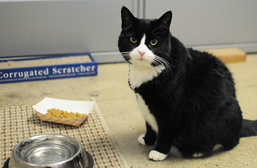

<-- Back
Max

- Pet Information -
- Pet name: Max
- Date lost: 2/26/18
- Area lost from: Santa Monica, California
- Age: 4 years
- Breed: Scottish Fold
- Color: Brown, white, black
- Other key identifying traits: small scar on back left leg.
- Personality: Shy around strangers, but friendly with other dogs.
- Medical needs: N/A
- Owner Information -
- Name: Sandy Sherman
- Home area: Santa Monica, California
- Cell #: 222-333-4444
- Home #: N/A
- Email: sandysherman@gmail.com